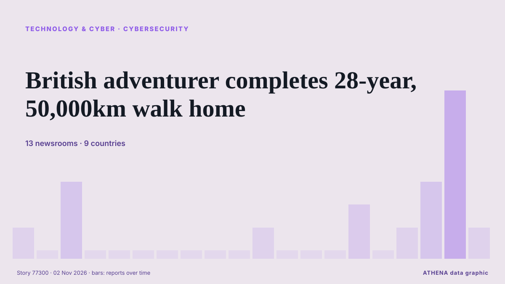

الأمن السيبراني
برعايةبرعاية  Cybernetics and Artificial Intelligence Lab Welcome to the Cybernetics and Artificial Intelligence Laboratory, established at the Department of Business Administration of the National
Cybernetics and Artificial Intelligence Lab Welcome to the Cybernetics and Artificial Intelligence Laboratory, established at the Department of Business Administration of the National
| 20 أكتوبر | 0 |
|---|---|
| 21 أكتوبر | 0 |
| 22 أكتوبر | 0 |
| 23 أكتوبر | 0 |
| 24 أكتوبر | 0 |
| 25 أكتوبر | 0 |
| 26 أكتوبر | 0 |
| 27 أكتوبر | 0 |
| 28 أكتوبر | 0 |
| 29 أكتوبر | 1 |
| 30 أكتوبر | 5 |
| 31 أكتوبر | 3 |
| 1 نوفمبر | 3 |
| 2 نوفمبر | 4 |
تُعرض العناوين بالإنجليزية كما نُشرت.

British adventurer completes 28-year, 50,000km walk home
A 57-year-old British adventurer, Karl Bushby, has returned home after completing a remarkable 28-year, 50,000-kilometre journey on foot across four continents without using any form of transport to… من Vanguard
Chainalysis discloses data breach from "offensive agentic techniques"
Blockchain analytics firm Chainalysis disclosed a data breach after attackers used "offensive agentic techniques" to access internal systems and tools, exposing customer names, email addresses, user… من BleepingComputer
Ukraine and Russia both hit by cyberattacks on emergency apps
Authorities in both Ukraine and Russia said that their emergency alert mobile applications were targeted by cyberattacks late Sunday. من France 24 English
ClassNK updates ship cyber security guidelines to simplify compliance
ClassNK has released the second edition of its Guidelines for Cyber Security Management System for Ships, introducing clearer audit requirements and closer alignment with international cyber security… من Container News
Ukrainian air force says public air raid alert app has been hacked
For a short time, the app showed Kyiv and other areas subject to a nuclear alert. من The Straits Times
Ukraine's air-raid warnings app partially restored following cyberattack
The app's developers have restored some features, including warnings about drone and missile threats, while temporarily disabling the display of aerial assets on the map. من Ukrainska Pravda (English)
Jack Grealish in 'breach of club discipline' as David Moyes responds to Everton decision
Former Aston Villa skipper Jack Grealish was left out of Everton's squad for their match against Newcastle. من Birmingham Mail
Cyberattack exposes explicit footage on Cairo billboard
Egypt suspends digital advertising screens after breach affects displays in several countries. من News of Bahrain
Cloudflare Reports 18.2 Million Network-Layer DDoS Attacks in Q3, Up 38%
Threat actors are launching about 8,226 network-layer distributed denial-of-service (DDoS) attacks per hour, Cloudflare revealed Thursday. من The Hacker News
Police probe hacking of Kluang council LED screens after obscene content displayed
KLUANG, Oct 31 — Eight LED display screens belonging to the Kluang Municipal Council (MPK) around the town a... من Malay Mail
Canada, EU lay out vision for closer ties in ‘dangerous and divided’ world
Canada and the EU are laying out their vision for what a closer relationship looks like in an increasingly “dangerous and divided” where trade has become “weaponized.” من Global News (World)